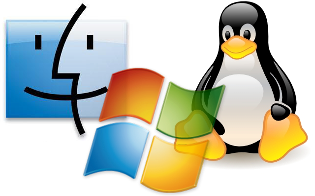

Prof. Dr. Raulcézar Alves
raulcezar@gmail.com
Computador
- Máquina que manipula dados a partir de uma lista de instruções.
- Podem ser mecânicos (analógicos) ou eletrônicos (digitais).
História dos Computadores
-
1ª Geração (1930-1958)
- circuitos eletrônicos a válvulas
- milissegundos
História dos Computadores
-
2ª Geração (1955-1965)
- circuitos eletrônicos transistorizados
- microssegundos

História dos Computadores
-
3ª Geração (1965-1980)
- circuitos integrados
- nanossegundos
História dos Computadores
-
4ª Geração (1980-...)
- tecnologia de firmware, integração em escalas superiores, chips
- picossegundos
História dos Computadores
- Válvula: dispositivo que conduz a corrente elétrica em um só sentido;
- Transistor: amplificador de cristal, inventado nos EUA em 1948, para substituir a válvula;
- Circuito Integrado: circuito eletrônico constituído de elevado número de componentes alocados em um chip de centímetros/milímetros quadrados;
- Chip: “pastilha” de semicondutor (exemplo silício), onde se monta um circuito integrado;
- Firmware: programa armazenado em chip.
Primeiro Computador
EniacEventos que impulsionaram a Computação
Navegação marítima e astronomiaSegunda Guerra Mundial (Alan Turing)
Supercomputadores
- computador com altíssima velocidade de processamento e grande capacidade de memória
- utilizado em: física quântica, mecânica, meteorologia, modelagem molecular, simulação nuclear
Computação Quântica
- arquitetura diferente da usual (Von Neumann)
- necessidade para processar IA
- um "objeto" pode tomar diferentes estados ao mesmo tempo, ou seja, é possível verificar todas as possibilidades de resultado de uma função no mesmo instante (quantum)
Funcionamento e estrutura básica de um computador
- Entrada: leitura de dados
- Processamento: operações lógicas e aritméticas
- Saída: escrita ou gravação de resultados
Modelo de Von Neumann
- Matemático americano que propôs, em 1940, o modelo base utilizado nos computadores atuais.
- O Processamento segue as instruções (algoritmo) armazenadas em uma memória, para ler canais de entrada, enviar comandos de saída e alterar as informações contidas em uma memória de dados.
Modelo de Von Neumann
-
Unidade Central de Processamento (UCP)
- cérebro do computador, conhecido como CPU
- local onde os dados são processados
- função de interpretar e executar os programas
- coordena e executa as instruções e as operações aritméticas e lógicas
Modelo de Von Neumann
-
Unidade de Controle (UC)
- gerencia todos os recursos do computador
- coordena e controla todas as atividades realizadas em uma sequência lógica e sincronizada
- recebe instruções de programas, decodifica e dirige os componentes para que possam ser executados
Modelo de Von Neumann
-
Unidade Aritmética e Lógica (UAL)
- responsável pela execução de todas as operações aritméticas e lógicas realizadas durante o processamento
Modelo de Von Neumann
-
Memória Principal
- componente responsável pelo armazenamento de dados e instruções (eletrônico e mais rápido)
Modelo de Von Neumann
-
Memória ROM (Ready Only Memory)
- apenas leitura
Modelo de Von Neumann
-
Memória RAM (Random Access Memory)
- memória temporária que armazena dados e programas durante a execução e que é apagada quando se desliga o computador
Modelo de Von Neumann
-
Memória Cache
- memória fisicamente integrada no processador, cuja finalidade é melhorar a performance do mesmo, reduzindo o tempo gasto com a transferência
Modelo de Von Neumann
-
Memória Secundária
- constituída de componentes mecânicos, eletrônicos, magnéticos, para armazenar permanentemente dados e programas (HD, Pendrive, cartão de memória, etc)
Modelo de Von Neumann
-
Unidade de Entrada
- unidades através das quais dados e instruções são fornecidos ao computador
- exemplo: leitoras ópticas, teclados, mouses, scanners, unidades leitoras de discos, etc
Modelo de Von Neumann
-
Unidade de Saída
- unidades através das quais o computador fornece os resultados de um programa para que sejam mostrados ou armazenados
- exemplos: impressoras, unidades gravadores de disco, monitores de vídeo, entre outros
Modelo de Von Neumann
-
Exemplo: programa que lê dois valores e mostra o resultado da soma
- Entrar com 2 valores (Unidade de Entrada)
- Somar (UCP e Memória Principal)
- Mostrar Valores (Unidade de Saída)
Hardware
- conjunto dos constituintes físicos do computador
- exemplo: teclado, mouse, impressoras, gabinetes, entre outros
Software
- conjunto de todos os programas de um computador
- exemplo: word, excel, browsers
Sistema Operacional
- programa que gerencia o funcionamento do computador, abstraindo principalmente o hardware
- exemplo: windows, linux, mac os

Linguagem de Programação
- Método padronizado para comunicar instruções para um computador
Código Fonte X Programa
- Código Fonte: instruções escritas em uma linguagem de programação
- Programa: surge após a compilação do código fonte
Linguagens de Baixo Nível X Alto Nível
- Baixo Nível: linguagens de máquina, escrita em binário e entendida pelo hardware
- Alto Nível: linguagem destinada ao ser humana, próxima da natural, para facilitar a programação
Linguagem Assembly
- seus comandos tem relação direta com o hardware
- última camada de programação antes do hardware
- para fazer programas em assembly, é necessário um tradutor Assembler (programa), que traduz as instruções para o hardware
Compilador X Interpretador
- são programas que traduzem programas escritos em uma linguagem de programação para uma linguagem de máquina
Compilador X Interpretador
- Compilação: tradução do programa escrito numa linguagem de alto nível para linguagem de máquinas, gerando um novo arquivo.
Compilador X Interpretador
- Interpretação: tradução de um programa escrito numa linguagem de alto nível para a linguagem de máquina, seguida da execução deste programa. A tradução é feita em tempo de execução linha-a-linha do código, e caso alguma esteja errada as outras já foram apresentadas ao usuário.
Paradigmas de Programação
- Linguagem Imperativa/Procedural: orientada por procedimentos, sequência de comandos passo-a-passo.
- exemplos: C, Pascal, Basic, Clipper
Paradigmas de Programação
- Linguagem Declarativa: avaliação de funções matemáticas (Funcional/Lógica).
- exemplos: Prolog, Haskell, Lisp
Paradigmas de Programação
- Linguagem Orientada a Objeto: POO, um programa é considerado como uma coleção de objetos com característcas e ações.
- exemplos: Java, C++, C#